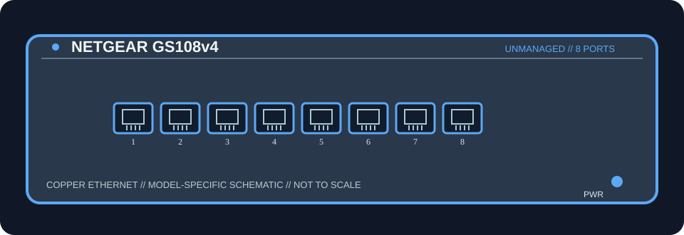

[ MODEL-SPECIFIC NETWORK HARDWARE ]
NETGEAR GS108v4 8-Port Gigabit Ethernet Unmanaged Switch
Eight copper Gigabit Ethernet access ports; all ports are peers and any can be used as the upstream connection. The GS108v4 is unmanaged and has no PoE output, SFP cage, or dedicated faster uplink. Do not apply this entry to other GS108 revisions or GS108E/GS108T managed variants.

MODEL IDENTIFICATION: GS108 hardware version v4; verify exact suffix on the label. Match the complete model and hardware revision on the label before applying specifications.
Exact specifications and compatibility
| Cataloged model / revision | GS108v4 — GS108 hardware version v4; verify exact suffix on the label |
|---|---|
| Dedicated subcategory | Unmanaged switches |
| Ports and line rates | 8 × 10/100/1000BASE-T RJ-45; nominal negotiated link rate up to 1 Gb/s per port. |
| Switching capacity | 16 Gbps manufacturer switching fabric; this is aggregate switching capacity, not measured application throughput. |
| PoE | No PoE input or output is specified for this model. |
| Uplink and media | No dedicated uplink or optical cage; all ports are copper RJ-45 and any port may connect upstream. Use standards-compatible twisted-pair Ethernet cable. |
| Power | External adapter output 12 V DC / 0.5 A (6 W rated); NETGEAR lists maximum switch consumption of 4.9 W for GS108v4. Use the original or electrically matching adapter. |
| Form factor | Fanless desktop metal enclosure; desktop or wall-mount installation. |
| Host compatibility | Connects standard 10/100/1000BASE-T Ethernet clients, servers, or upstream routers/switches over suitable copper cable. OS-independent; no host driver is required. Check the GS108v4 label and adapter rating. |
| Compatibility caveat | Eight copper Gigabit Ethernet access ports; all ports are peers and any can be used as the upstream connection. The GS108v4 is unmanaged and has no PoE output, SFP cage, or dedicated faster uplink. Do not apply this entry to other GS108 revisions or GS108E/GS108T managed variants. Confirm regional SKU, hardware revision, adapter rating and supported cable category. Negotiated PHY rate does not guarantee end-to-end throughput. |
| Management / drivers | Unmanaged Layer 2 switch; no switch configuration interface or host driver is required. Do not infer VLAN, routing, or managed-switch capabilities. |
Model-specific notes
Eight copper Gigabit Ethernet access ports; all ports are peers and any can be used as the upstream connection. The GS108v4 is unmanaged and has no PoE output, SFP cage, or dedicated faster uplink. Do not apply this entry to other GS108 revisions or GS108E/GS108T managed variants. The switching-capacity figure is the manufacturer's aggregate fabric rating, not a benchmark. An upstream router or switch is needed for access to other networks.
Manufacturer and data-sheet sources
- NETGEAR GS108v4 official product support pageManufacturer product documentation for the exact model/revision and its specifications or technical data sheet.
- NETGEAR GS105v5 / GS108v4 / GS116v2 official data sheet (PDF)Manufacturer product documentation for the exact model/revision and its specifications or technical data sheet.
Specifications apply to the stated model/revision and documentation. Confirm the physical nameplate and bundled power supply before use; near-name product variants may differ.